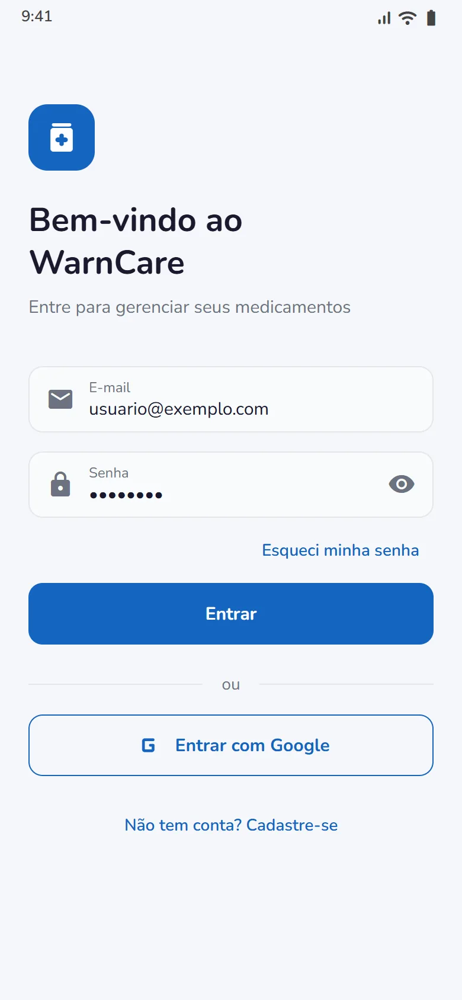
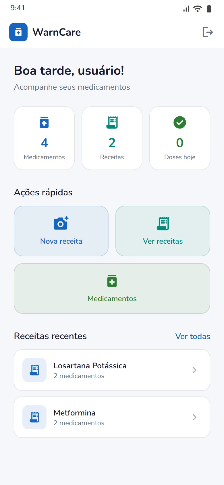
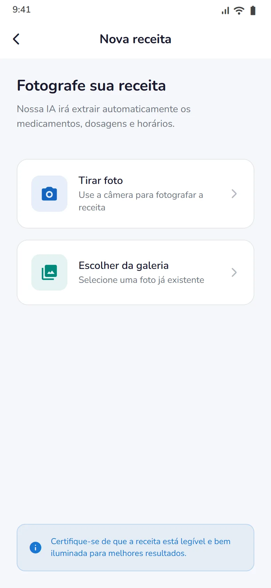
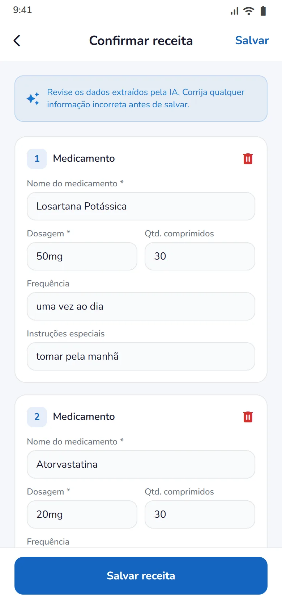
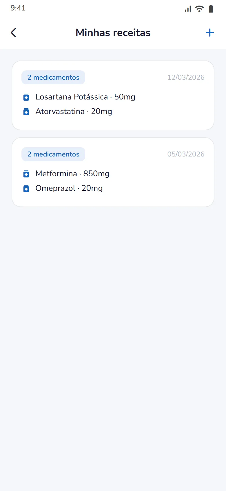
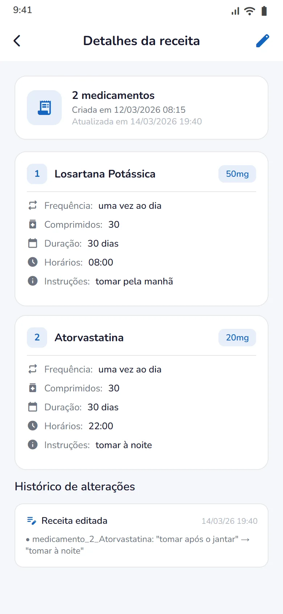
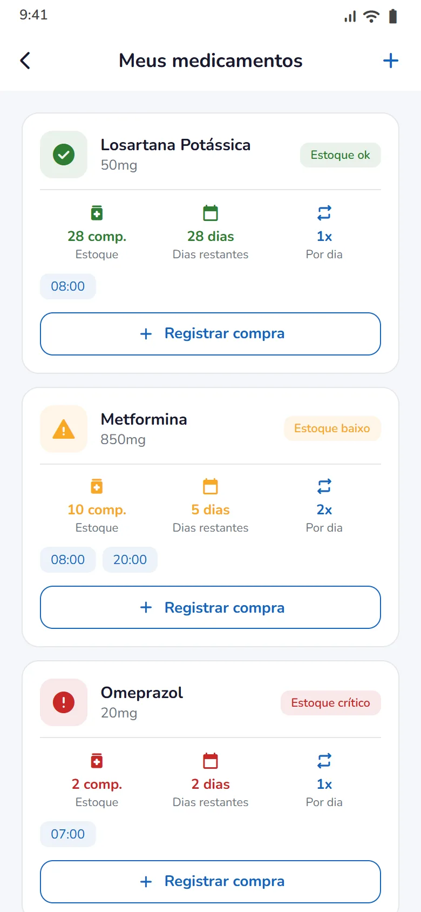
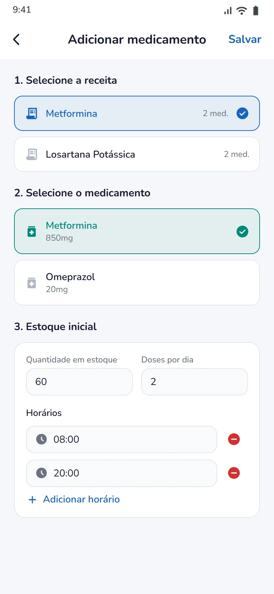

PortfólioAplicativos, jogos e automação
WarnCare
Protótipo de aplicativo para controle de medicamentos. A receita ou a embalagem é fotografada, o texto é lido e organizado em nome, dose, frequência e duração, e o app calcula quando o remédio vai acabar.
- Tipo
- Protótipo
- Plataformas
- Android e iOS
- Leitura
- Google Cloud Vision e Gemini
- Backend
- Firebase
Telas
Telas reproduzidas a partir do código Dart do app: mesmo layout, cores e textos.
















Fluxo de navegação
Rota sem sessão volta ao login. Rota de login com sessão vai ao início.
Leitura da receita
A função exige usuário autenticado e tem limite de 120 segundos e 512 MB. Sem resposta da função, o app abre a conferência com dados de exemplo.
Funcionalidades
- AcessoE-mail e senha com no mínimo 6 caracteres, ou conta Google.
- Leitura por fotoA Vision lê o texto da receita. O Gemini devolve os campos de cada remédio.
- ConferênciaO usuário corrige, inclui ou exclui remédios antes de salvar.
- HistóricoCada edição grava o valor anterior e o novo de cada campo.
- EstoqueQuantidade, doses por dia e horários. O botão Registrar compra soma ao estoque.
- ExclusãoArrastar a receita para o lado pede confirmação e exclui.
Estoque
Dias restantes = estoque dividido pelas doses por dia, arredondado para baixo.
Exemplo: 10 comprimidos e 2 doses por dia dão 5 dias, faixa baixa.
sem estoque
dias: crítico, em vermelho
dias: baixo, em amarelo
dias: estoque ok, em verde
Arquitetura
Situação
Protótipo: 29 de 80 arquivos Dart têm código. As 10 telas acima funcionam.
A função de leitura da embalagem está pronta (nome, dose, comprimidos e fabricante), sem tela no app.
Notificações, perfil e preferências têm rota declarada e arquivo vazio.